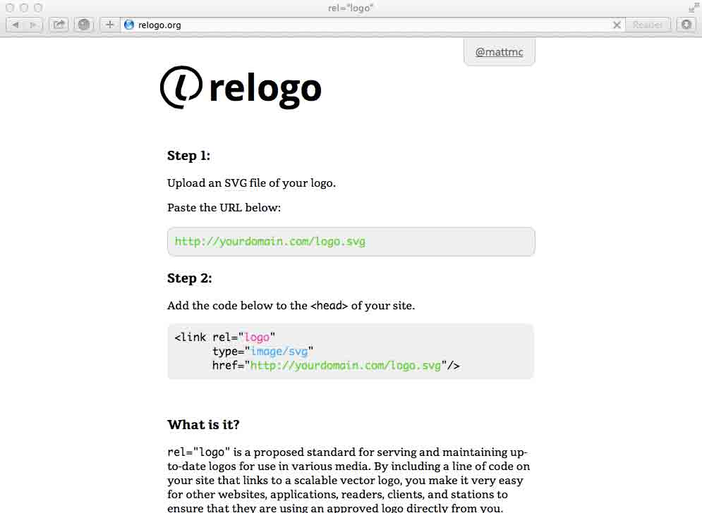

Horsehead Nebula
Overview
The Horsehead Nebula (also known as Barnard 33 in emission nebula IC 434) is a dark nebula in the constellation Orion. The nebula is located just to the south of the star Alnitak, which is farthest east on Orion's Belt, and is part of the much larger Orion Molecular Cloud Complex. The nebula was first recorded in 1888 by Scottish astronomer Williamina Fleming on photographic plate B2312 taken at the Harvard College Observatory. The Horsehead Nebula is approximately 1500 light yearsfrom Earth. It is one of the most identifiable nebulae because of the shape of its swirling cloud of dark dust and gases, which bears some resemblance to a horse's head when viewed from Earth.
The Horsehead Nebula is approximately 1500 light yearsfrom Earth. It is one of the most identifiable nebulae because of the shape of its swirling cloud of dark dust and gases, which bears some resemblance to a horse's head when viewed from Earth.
The dark cloud of dust and gas is a region in the Orion Molecular Cloud Complex where star formation is taking place. Thisstellar nursery, as it is known, can contain over 100 known organic and inorganic gases as well as dust consisting of large and complex organic molecules.
The red or pinkish glow originates from hydrogen gas predominantly behind the nebula, ionized by the nearby bright starSigma Orionis. Magnetic fields channel the gases leaving the nebula into streams, shown as streaks in the background glow. A glowing strip of hydrogen gas marks the edge of the massive cloud and the densities of stars are noticeably different on either side.
The heavy concentrations of dust in the Horsehead Nebula region and neighbouring Orion Nebula are localized, resulting in alternating sections of nearly complete opacity and transparency. The darkness of the Horsehead is caused mostly by thick dust blocking the light of stars behind it. The lower part of the Horsehead's neck casts a shadow to the left. The visible dark nebula emerging from the gaseous complex is an active site of the formation of "low-mass" stars. Bright spots in the Horsehead Nebula's base are young stars just in the process of forming.
=======I'm a designer at Pentagram, co-host of the design podcast On the Grid and contributor to The League of Moveable Type.
Branding & Identity
Deck the Holidays


I’m proud to have had the chance to design the holiday campaign for Top of the Rock and Rockefeller Center with Michael Gericke (partner in charge) and Kelly Sung.
Pepsi


My team at Pentagram (Michael Gericke’s) recently finished the design of this gate for Pespi at Metlife Stadium, to celebrate the Super Bowl in New Jersey. We designed a three story vinyl graphic, complete with a typographic pattern of football related phrases, 2 large bottle sculptures created from the Pepsi logo, and various banners throughout the gate.
>>>>>>> FETCH_HEADImages
Videos
Web Apps & Musings
clipping.us

Clipping.us is an easy way to paste snippets of text from one computer to another without any login information or registration. Just type anything after clipping.us/ like clipping.us/test, paste your snippet, hit save. Then access it from any other computer using the same url. Afterwards you can delete it, change, or leave it.
rel="logo"
rel="logo" is a proposed standard for serving and maintaining up-to-date logos for use in various media. By including a line of code on your site that links to a scalable vector logo, you make it very easy for other websites, applications, readers, clients, and stations to ensure that they are using an approved logo directly from you.